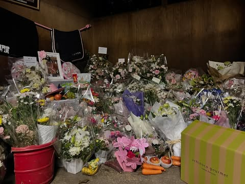

Perfil
Perfil
Perfil
Perfil

El pasado fin de semana, el circuito de Koichi fue escenario de un emotivo homenaje a la famosa yegua Haru Urara, conocida por su increíble historia de perseverancia en las carreras de caballos, con un total de 113 carreras disputadas y 0 victorias conseguidas durante toda su carrera. El evento reunió a fanáticos, jinetes y amantes de los caballos, quienes ofrecieron flores y fotos en forma de tributo.
Haru Urara se convirtió en un símbolo de esperanza y determinación en Japón, inspirando a muchos con su actitud positiva a pesar de las derrotas constantes. Su historia tocó los corazones de personas de todas las edades, y su legado perdura como un recordatorio de que el valor y la determinación pueden ser más importantes que la victoria misma.
Haru Urara falleció el 9 de Septiembre de 2025 en Martha Farm, en la perfectura de Chiba, Japon, a causa de un cólico, una adección intestinal que tiene a afectar a bastantes caballos ancianos siendo una de las principales causas de muerte en estos animales. Según los cuidadores de la granja, el cólico se detecto el día 8 de septiembre al ver que la yegua no mostraba signos de apetito y que no había defecado durante todo el día. Tristemente y pese a los esfuerzos de los veterinarios, Haru Urara fallecío al día siguiente dejando un vacío en el corazón de sus seguidores.
El homenaje en Koichi Circuit incluyó una ceremonia especial donde se recordó la vida y carrera de Haru Urara. Los asistentes compartieron anécdotas y reflexiones sobre cómo la yegua había influido en sus vidas, destacando su espíritu inquebrantable y su capacidad para inspirar a otros a nunca rendirse.
Además del homenaje en Koichi Circuit los trabajadores de Martha Farm tambien ha dejado que la gente pueda ir a dejar sus condolencias en el establo en el que se alojaba Urara en la granja, donde los fanáticos han estado dejando flores y notas en su memoria a lo largo de estos últimos días.

Es una pena la pérdida de Haru Urara. Nunca ganó una carrera pero ganó el corazón de todos los aficionados. Descanse en paz.

Estuve presente en el homenaje y fue muy emotivo. Había gente de todas las edades recordando su legado. No se trata de ganar, sino de nunca rendirse.

Tengo entendido que en Martha Farm están considerando crear un pequeño museo dedicado a su memoria. Si alguien tiene más información, me encantaría saberlo.